Deploying and Integrating With SpiffArena
This guide shows you how to deploy the demo Connector Proxy as an AWS Lambda Function as well as how to integrate it with SpiffArena.
The Getting Started Guide will be used as the basis for integration but the steps should easily map to any custom installation.
There is an assumption that you have access to log in to the AWS Console and can create/deploy Lambda functions.
Checkout the source code
The source code for this project is available on GitHub. You will need to clone this repository to complete the steps below.
Building the zip
One option when deploying a Lambda function is to upload a zip file containing the source code or executable. In the root of this repository run:
make zip
This will create a zip file containing the lambda entry point function as well as all the dependencies needed to execute the connectors. For this example, the libraries spiffworkflow-proxy are used for discovering connectors and connector-http is an example connector that provides HTTP GET and POST requests.
Once make zip completes, connector_proxy_lambda_demo.zip will be available in the repository root.
Creating the Lambda Function
Log in to the AWS Console and navigate to the Lambda section.
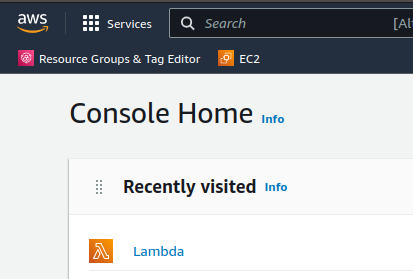
From there choose Create function.
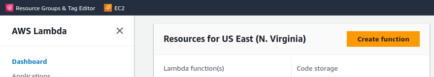
Choose to Author from scratch and select the most recent Python runtime.
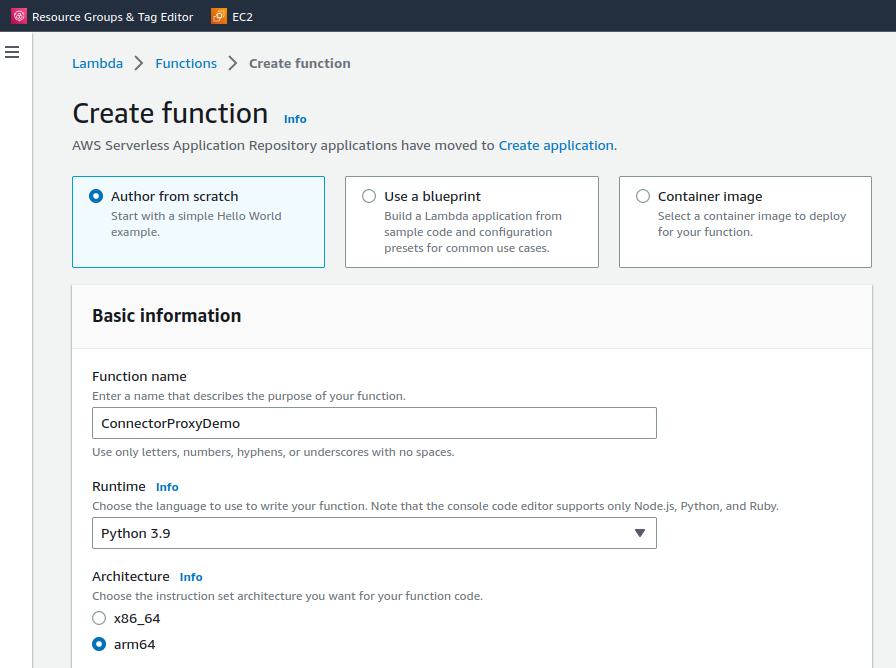
Under Advanced Settings check Enable function URL.
For this demo, we will use the NONE auth type to keep things simple.
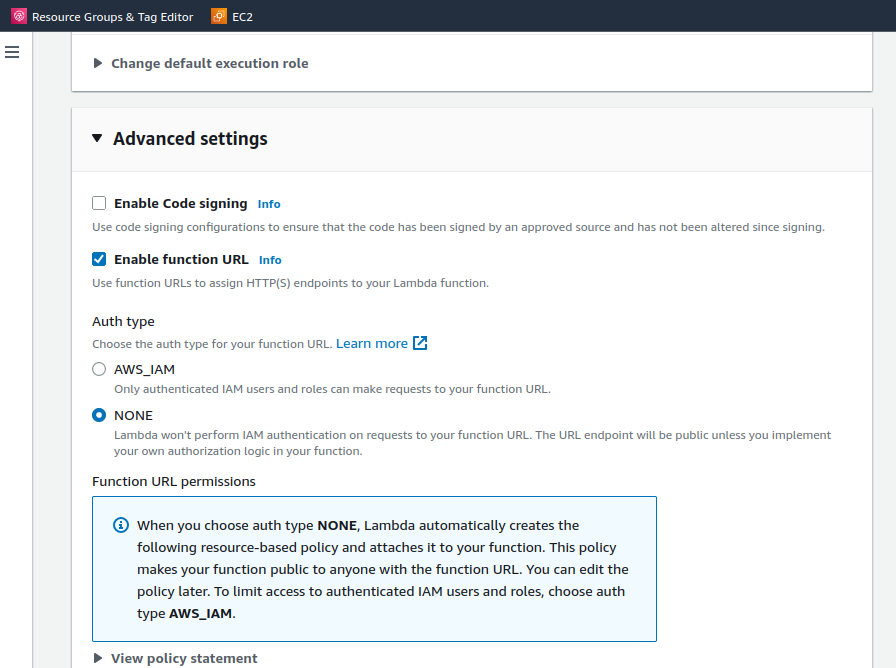
After hitting the Create function button, you will be taken to your new Lambda function:
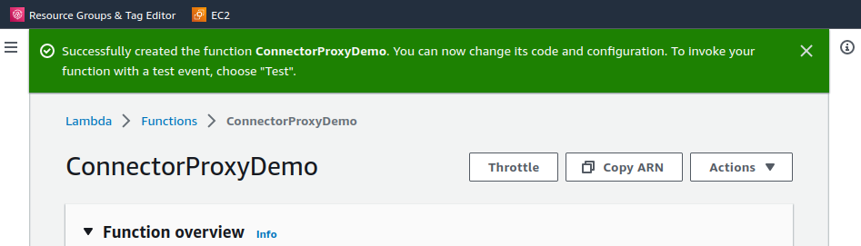
In the bottom right of the first section is a link to your Lambda’s function URL. Click it for a hello world response.
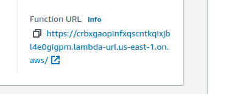
Deploying the Lambda Function
If you scroll down you will see a section with the example code created with your Lambda function.
We are going to replace this with the contents of our zip file.
Choose Upload from and select .zip file.
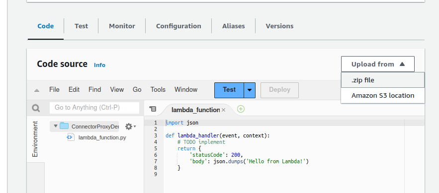
After a confirmation dialog, you will see your Lambda has been updated:
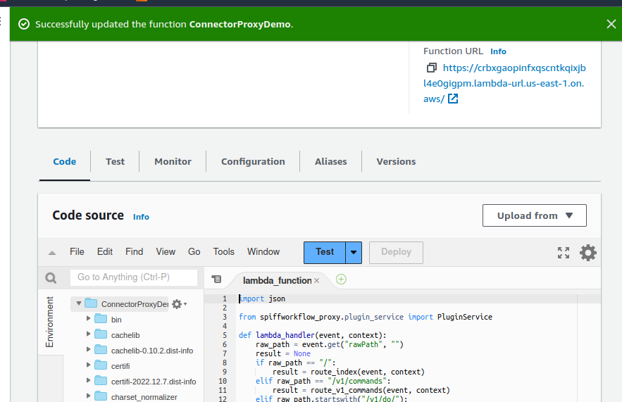
Click your function URL again to see a hello from our deployed Connector Proxy.
Integrating With SpiffArena
Congrats, your Connector Proxy has been deployed as a Lambda function.
To integrate it with SpiffArena we simply need to update an environment variable and restart the backend.
If using the Getting Started Guide open the docker-compose.yml file, else edit the environment variable in the way appropriate for your deployment.
The variable we need to change is called SPIFFWORKFLOW_BACKEND_CONNECTOR_PROXY_URL.
Example diff using the function URL from the above images:
diff --git a/docker-compose.yml b/docker-compose.yml
index 95b87b39..7d55c492 100644
--- a/docker-compose.yml
+++ b/docker-compose.yml
@@ -26,7 +26,7 @@ services:
SPIFFWORKFLOW_BACKEND_URL: "http://localhost:${SPIFF_BACKEND_PORT:-8000}"
SPIFFWORKFLOW_BACKEND_BPMN_SPEC_ABSOLUTE_DIR: "/app/process_models"
- SPIFFWORKFLOW_BACKEND_CONNECTOR_PROXY_URL: "http://spiffworkflow-connector:8004"
+ SPIFFWORKFLOW_BACKEND_CONNECTOR_PROXY_URL: "https://crbxgaopinfxqscntkqixjbl4e0gigpm.lambda-url.us-east-1.on.aws"
SPIFFWORKFLOW_BACKEND_DATABASE_URI: "mysql+mysqlconnector://root:${SPIFF_MYSQL_PASS:-my-secret-pw}@spiffworkflow-db:${SPIFF_MYSQL_PORT:-8003}/spiffworkflow_backend_development"
SPIFFWORKFLOW_BACKEND_LOAD_FIXTURE_DATA: "false"
SPIFFWORKFLOW_BACKEND_OPEN_ID_CLIENT_ID: "spiffworkflow-backend"
Restart:
docker compose down
docker compose up -d
Testing
Create a new process model as described in the Getting Started Guide.
Add a Service Task and in its properties panel, you will see a drop-down to pick which connector in your Connector Proxy to call.
In this demo, we deployed HTTP GET and POST connectors:
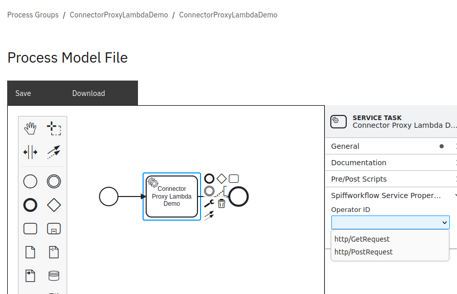
Choose the http/GetRequest operator ID and enter the dog fact API URL.
Remember to quote it since parameters are evaluated as Python expressions.
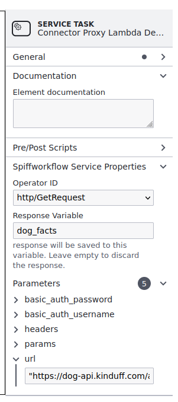
Run the process and once complete you can see the response in the workflow:
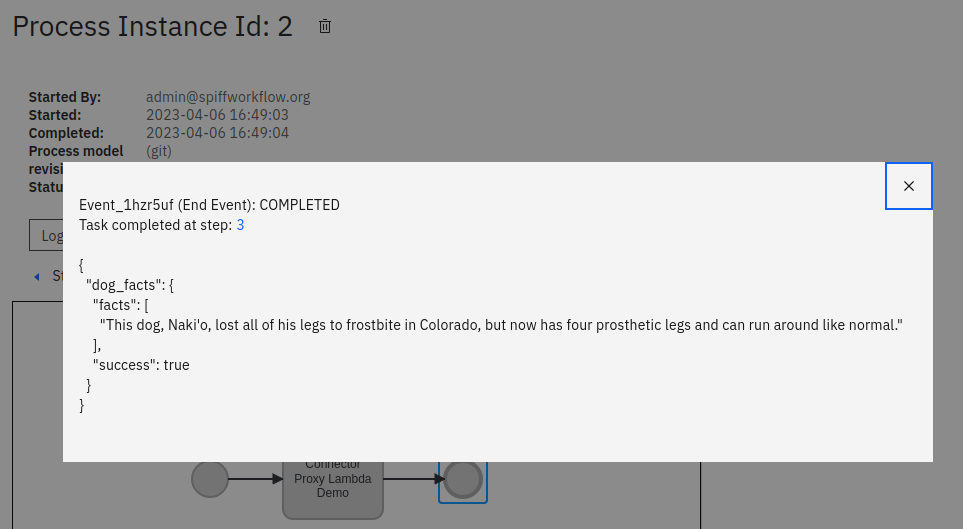
Congrats!
You have successfully deployed your own Connector Proxy as an AWS Lambda function and integrated it with SpiffArena.
You made a call from a workflow to get a dog fact.
Now imagine that call was to talk to an external system relevant to your business processes.